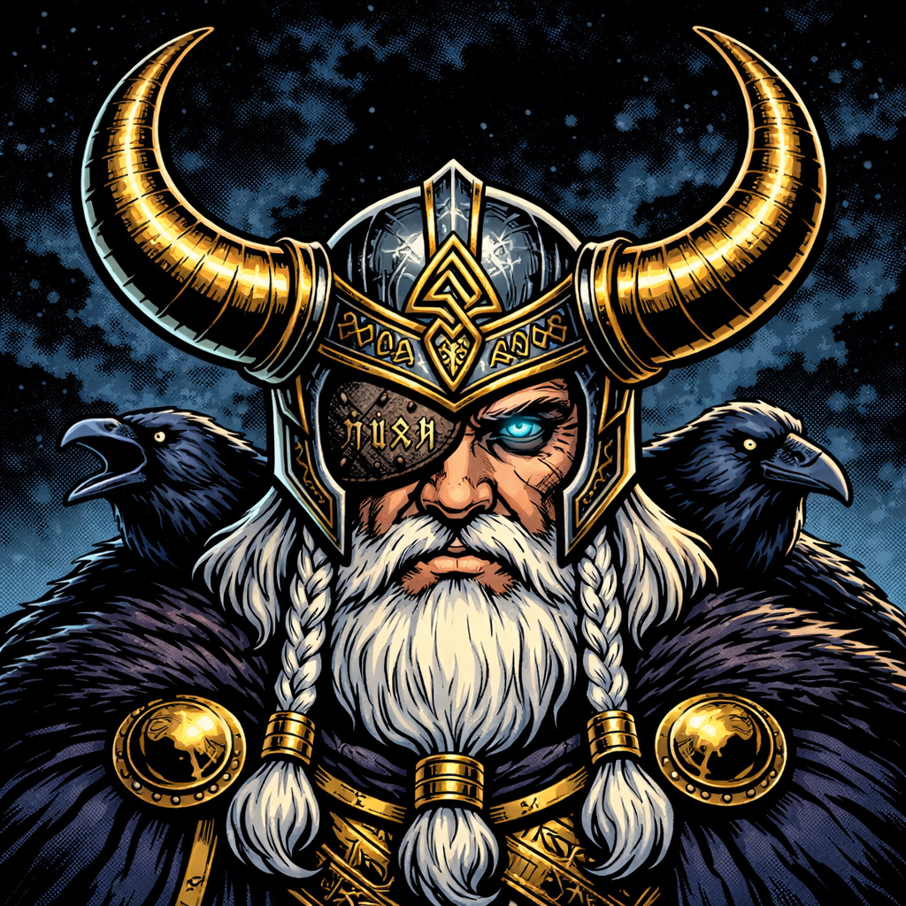
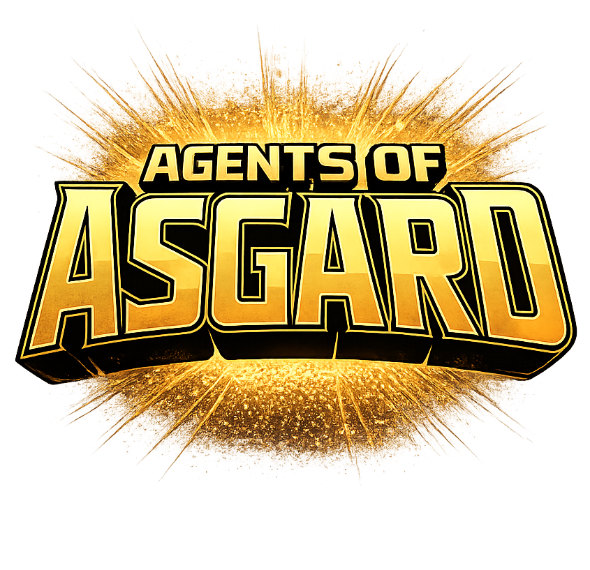
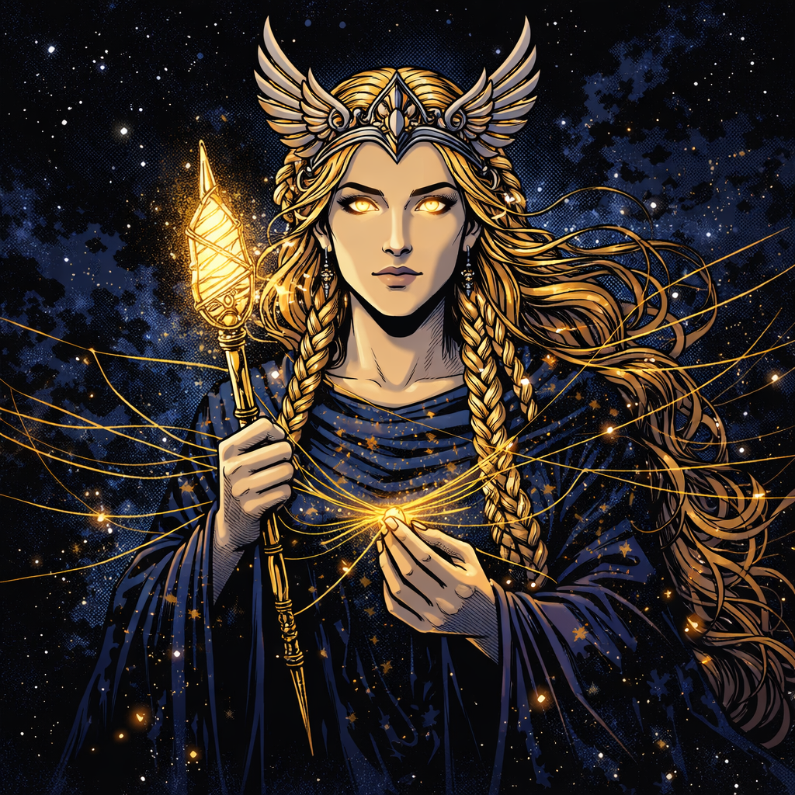
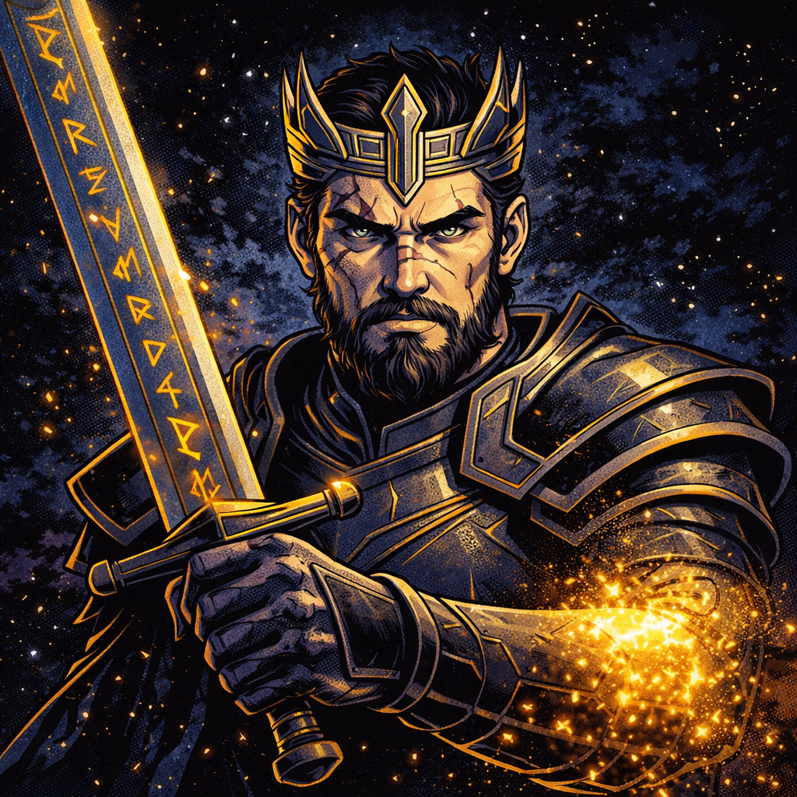
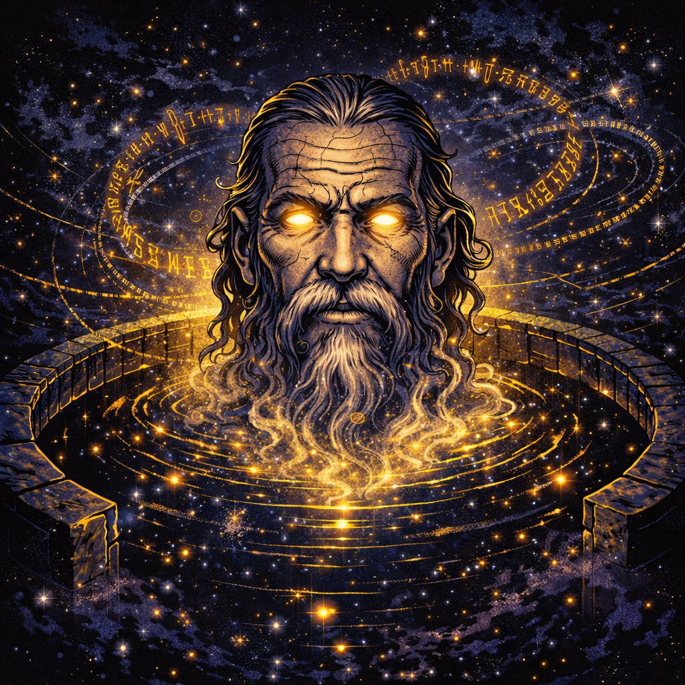
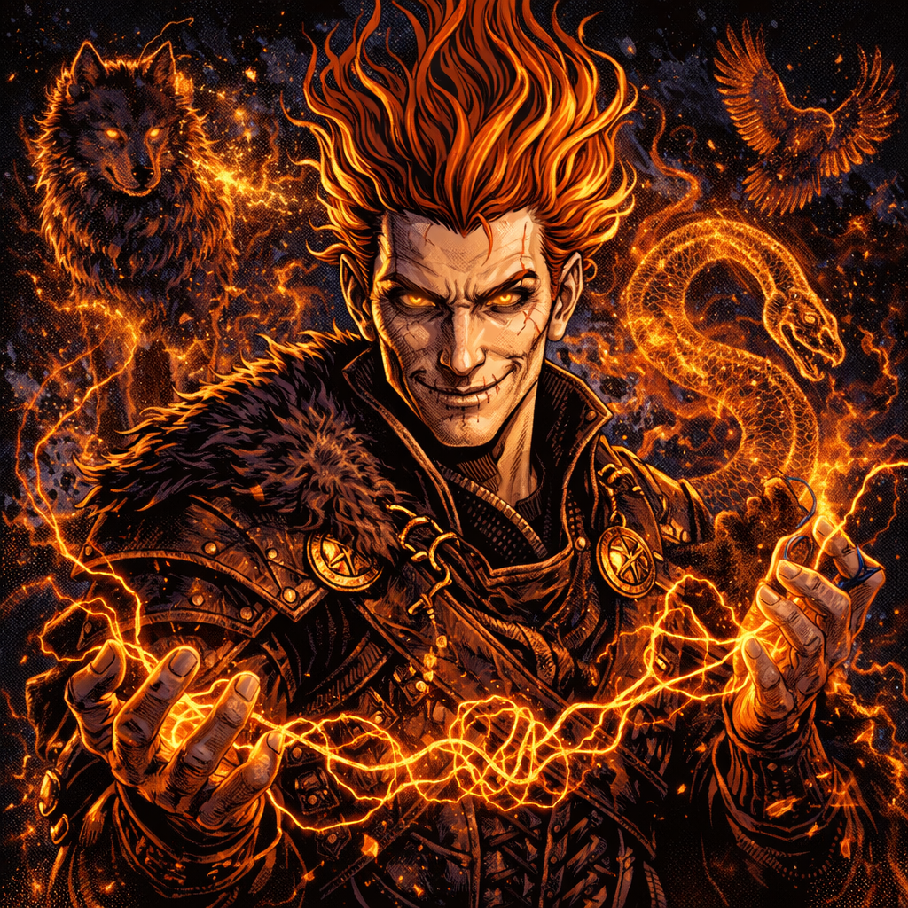
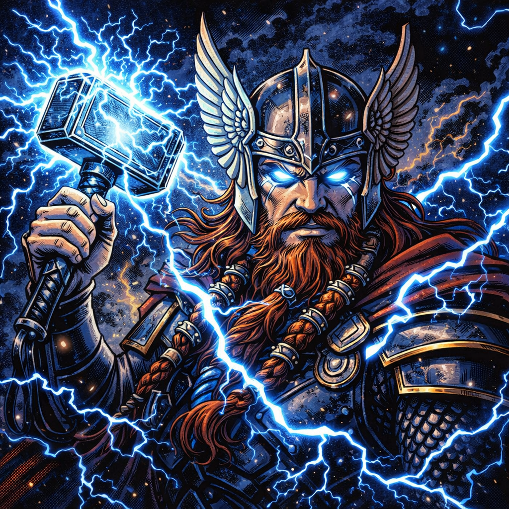
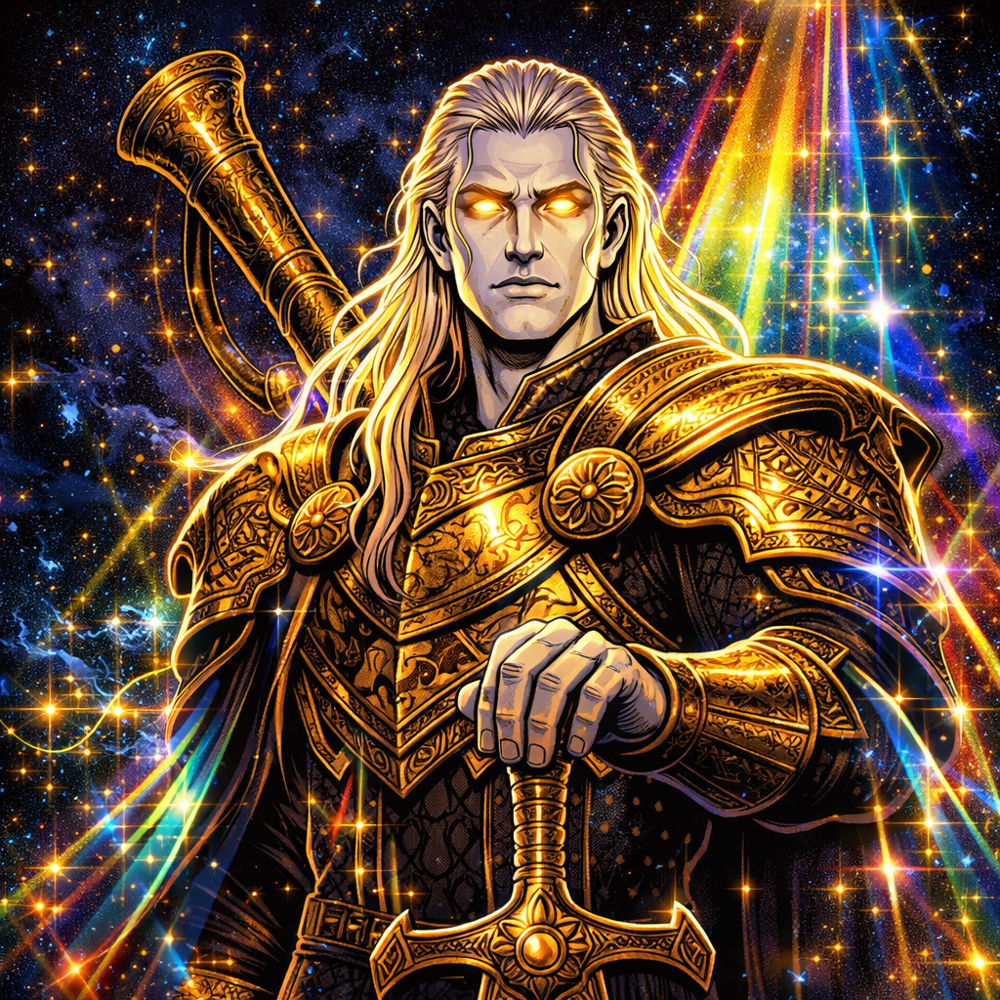

Odin
Primary Agent
The Allfather. Odin is your primary agent — he plans the approach, writes the code, and orchestrates the entire workflow. Every task starts and ends with Odin.

Seven gods. One codebase. Ship better code.
Specialized GitHub Copilot agent modes built on Norse mythology. Adversarial multi-model review that catches what a single agent never will.
A single AI writes code, reviews its own work, and calls it done. No second opinion. No pushback. No proof it actually ran the tests. Asgard takes a different approach — seven agents, each with a different role, each catching what the others miss.
Frigg reviews the plan on a different AI family than Odin. Adversarial reviewers span three model families. Blind spots from one family get caught by another.
Every code-change task is classified Small, Medium, or Large. Small gets Mimir. Medium adds Tyr. Large adds three more reviewers for five independent verdicts.
Odin never auto-commits, auto-pushes, or creates a PR without asking. Every deployment decision goes through you — the human in the loop.
Odin has opinions. Bad requirements, unnecessary complexity, scope creep — he'll challenge you before writing a line of code, not after.
Past failures, reviewer findings, and confirmed patterns persist across sessions. The same mistake doesn't happen twice.
Uncommitted changes detected and handled before work begins. Branches created, stashes managed, rollback commands included with every delivery.

The Allfather. Odin is your primary agent — he plans the approach, writes the code, and orchestrates the entire workflow. Every task starts and ends with Odin.

Goddess of foresight. Frigg reviews Odin's plan before a single line is written — or consult her directly to pressure-test an approach. She catches bad ideas early.

God of law. Tyr runs 10 structural checks — method length, nesting depth, naming, duplication, error handling, async correctness, and more. Every criticism comes with a concrete fix.

The wisest of all beings. Mimir is the first reviewer on every code-change task — running a 3-pass review with 25 cross-cutting heuristics that trace data flow, cache scope, idempotency, and boundary conditions that hide between files.

The trickster. Loki hunts subtle, devious problems — edge cases that pass every other review, race conditions hidden in happy paths, the bugs that ship to production.

God of thunder. Thor hits the code from a second model family — raw structural analysis that catches what nuanced reviewers rationalize away.

Guardian of the Bifrost. Heimdall provides the baseline cross-model review — a different AI family seeing the diff with fresh eyes and no shared blind spots.
Odin scans the codebase, reads past session history, detects build and test tooling, and rewrites your request into a precise specification. Ambiguity is resolved here — not during implementation.
The implementation plan is sent to Frigg on a different AI model family. She reviews for architectural blind spots, scope creep, and simpler alternatives — the concerns a second brain catches that the first won't.
Odin captures a baseline snapshot of build, test, and diagnostic state. Then he implements the approved plan — following existing codebase patterns, extending existing abstractions, writing tests alongside code.
The verification cascade: IDE diagnostics, build, type-check, lint, and test — every result INSERT'd into the SQL ledger. If tooling doesn't exist, Odin writes a smoke test. Zero unverified claims.
Mimir reviews every code-change task. On Medium and Large, Tyr joins for convention enforcement. On Large, three more adversarial models — Heimdall, Thor, and Loki — attack independently from different AI families. What survives Ragnarök ships.
The Evidence Bundle — generated from SQL, not prose. Baseline vs. after comparison, regression detection, reviewer verdicts, confidence level, and a one-command rollback. Everything the developer needs to trust the change.
Odin's full instruction set is 700+ lines. Loading all of it on every turn would bloat the context window and hurt compliance. Instead, step-specific knowledge lives in skill files that load on demand — only when their step executes.
Three review templates (spec, doc, code), model selection matrix, and all five reviewer launch configurations. Loaded once when Ragnarök begins.
The Evidence Bundle template, confidence level definitions, and formatting rules. Loaded when building the final proof artifact.
Session history query templates and filtering rules. Loaded during the Mímisbrunnr phase to retrieve lessons from past tasks.
Lean by design. Three skills keep the context window small and responses fast. More skills means more invocation points to remember — diminishing returns. Future optimization targets prose compression, not further extraction.
Every completed task ends with structured proof — not a summary the AI wrote from memory,
but a SELECT from the verification ledger. Here's what one looks like.
| Phase | Check | Result | Detail |
|---|---|---|---|
| Baseline | build | ✓ | compile · exit 0 |
| test | ✓ | test suite · 247 passed | |
| diagnostics | ✓ | 0 errors in target files | |
| After | build | ✓ | compile · exit 0 |
| test | ✓ | test suite · 251 passed (+4 new) | |
| lint | ✓ | linter · 0 warnings | |
| Review | Tyr | ✓ | No issues found |
| Mimir | ✓ | 1 suggestion → fixed before delivery | |
| Heimdall | ✓ | No issues found | |
| Thor | ✓ | No issues found | |
| Loki | ✓ | 1 edge case → fixed before delivery |